경남형 AI·디지털 기반 정보교육 수업모형 개발 연수

피지컬 컴퓨팅 기반의
확장적 문제 해결 수업
개별 장치의 탐구에서 창의적 문제 해결까지
2026.12.11.Fri.◷ 18:30 ~ 20:30

○○중학교 | ○○○
연수 전체 흐름
1부 · 수업모형 이해
- 개발 배경
 수업모형 구조
수업모형 구조- 실제 웹교재 사례
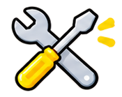
2부 실습 안내
2부 · 수업 설계 실습
- 교과서 분석
- 중간 과제 설계
- 모둠별 결과 공유
- 마무리
피지컬 컴퓨팅, 어떻게 가르칠까?
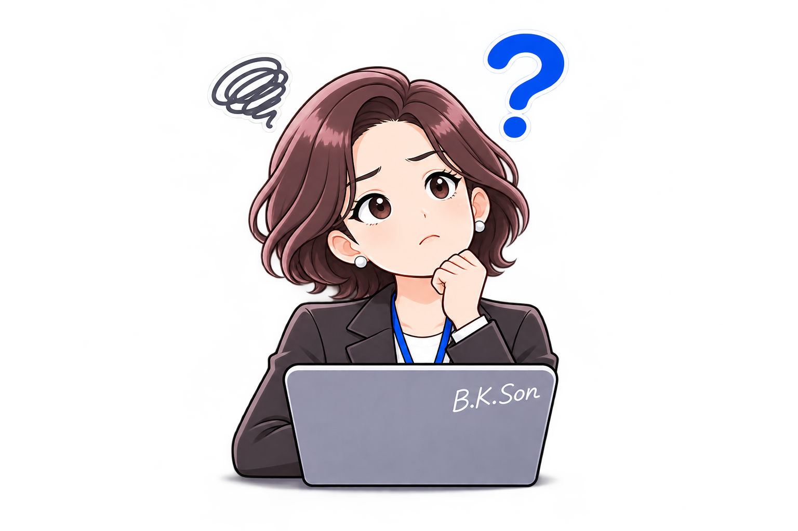
오렌지보드는 한 번도 사용해 본 적이 없는데…
교과서 예제만 따라 하면 충분할까?
학생들이 스스로 문제를 해결하게 하려면?
한 학기 수업을 어떻게 구성하지?
개별 장치 실습을 프로젝트로 어떻게 연결하지?
무엇을 어떻게 평가하지?
교과서 기본 실습에서 복합 프로젝트까지
- 교과서 구성
- 개별 장치 기본 실습⟶복합 프로젝트
수업모형 적용
- 개별 장치 기본 실습
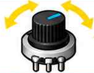
- 응용 과제
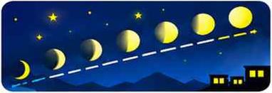
- 연결·조합 과제
- 복합 프로젝트
앞서 배운 지식과 기능을 활용하여 스스로 해결할 수 있는 문제의 범위를 넓혀 간다.
배운 지식과 기능을 어떻게 확장할 것인가?
- 연결기존 지식과 새로운 지식
- 조합여러 장치의 기능과 코드
- 변형새로운 목적에 맞게 코드 수정
↘↓↙
문제 해결 범위의 확장→컴퓨팅 사고력 향상
문제 해결의 단계적 확장
- 개별 지식 습득
- 지식 연결
- 지식 조합
- 지식 변형·확장
-
1개별 장치 탐구·응용
가변저항
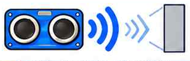
초음파 센서
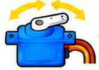
서보모터
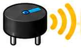
수동버저
- 장치의 작동 원리 이해
- 입력값과 출력 동작 관찰
- 기본 코드 실습
지식과 기능 습득·활용
-
2장치 연결·조합
 다이얼 방향 표지판
다이얼 방향 표지판
 거리 감지 경보기
거리 감지 경보기
- 가변저항값으로 회전 각도 제어
- 측정 거리로 경고음 제어
기존 지식 활용
-
3복합 시스템 구현·개선
빙글빙글 허수아비
- 여러 입력·출력 장치 연결
- 기존 코드를 조합하고 변형
- 실행 결과를 검증하고 개선
문제 해결 범위 확장
-
4새로운 생활 문제 해결
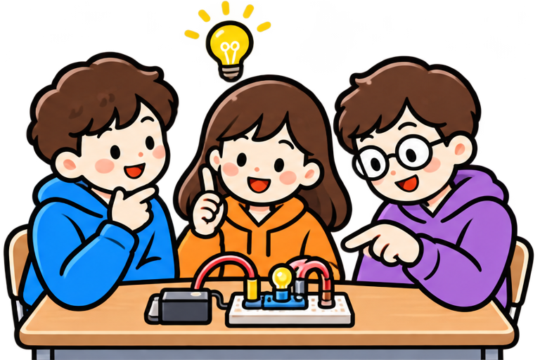
학생 주도 모둠 프로젝트
- 생활 속 문제 발견
- 필요한 장치와 알고리즘 선택
- 해결 방법 구현·공유
지식의 전이
11차시 대표 수업 사례
학생 주도 후속 프로젝트
배운 지식과 코드를 재사용하고 변형하며 문제 해결의 범위를 넓힌다.
11차시로 살펴보는 수업모형 적용
첫 번째 학습 흐름
- 1차시가변저항 탐구
- 2차시
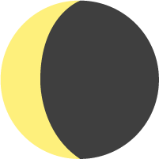
달의 모양과 위치 표현
- 3차시서보모터 탐구
- 4차시다이얼 방향 표지판
두 번째 학습 흐름
- 5차시초음파 센서 탐구
- 6차시수동버저와 음악 표현
- 7차시거리 감지 경보기
복합 시스템 구현·개선
- 8~9차시빙글빙글 허수아비 구현·검증
- 10~11차시
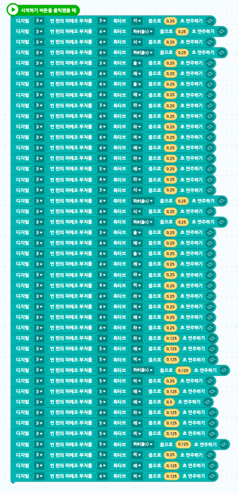
코드 분석·개선
학생 주도 생활 문제 해결 프로젝트는 별도 시수로 운영
각 과제는 어떻게 해결해 나갈까?
경남형 정보교육 6단계 문제 해결 과정
- 1
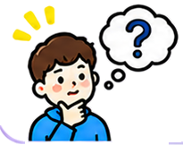
문제 발견
- 2문제 구조화
- 3컴퓨팅 설계
- 4구현
- 5테스트·개선
- 6
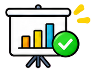
공유·확장
교수·학습 방식 6단계 전반에서 활용
- 직접교수
- 능동학습
- 명료화
과제의 특성과 학습 목적에 따라 필요한 단계를 중심으로 유연하게 운영한다.
교과서 기본 실습을 도움닫기로
- 가변저항
- 서보모터
- 초음파 센서
- 수동버저
- 개념 이해
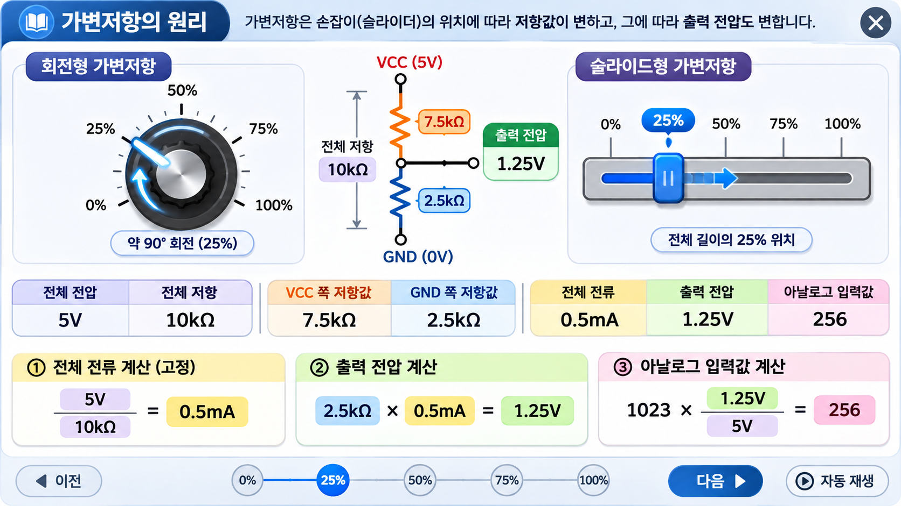
작동 원리 탐구- 기본 코드 실습
교과서 기본 실습은 새로운 문제 해결을 위한 출발점이다.
배운 지식을 새로운 상황에 적용하기
- 교과서
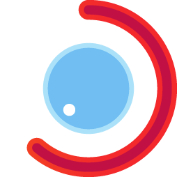
볼륨 크기 조절하기가변저항 입력을 볼륨 단계로 표현
- 응용달의 모양과 위치 표현하기과학 · 달의 위상과 위치를 표현
- 발전
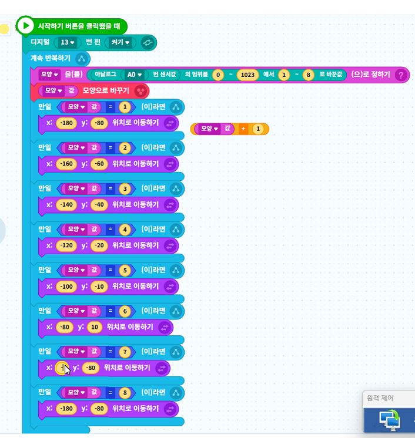
단계와 좌표의 규칙 일반화수학 · 단계에 따른 X·Y 좌표의 변화를 규칙으로 표현
달의 모양 단계가 늘어나더라도 코드의 개수가 늘어나지 않도록 할 수 있을까?
음악 지식을 코드로 표현하기
- 음높이·음표 길이음을 코드의 입력값으로 표현
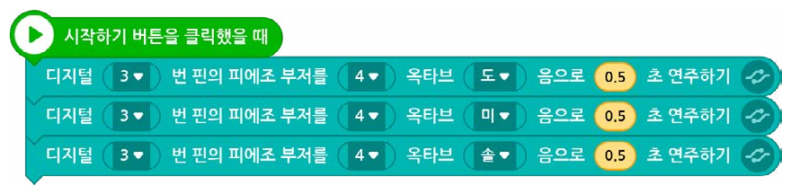
악곡 연주음을 연주 순서에 맞게 배열- 반복 구절의 함수화반복되는 구절을 함수로 호출
학생 산출물 · 언제나 몇 번이라도
기존 웹교재의 연주, 악보와 코드 강조 시연을 함께 살펴본다.
음악 지식을 표현하는 과정에서 알고리즘 구성과 코드 재사용으로 확장한다.
다이얼 방향 표지판
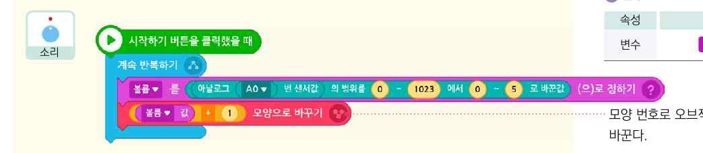
가변저항 입력값기존 입력 코드에서 읽어 올 값 찾기- 값 변환입력 범위를 각도 범위로 바꾸기
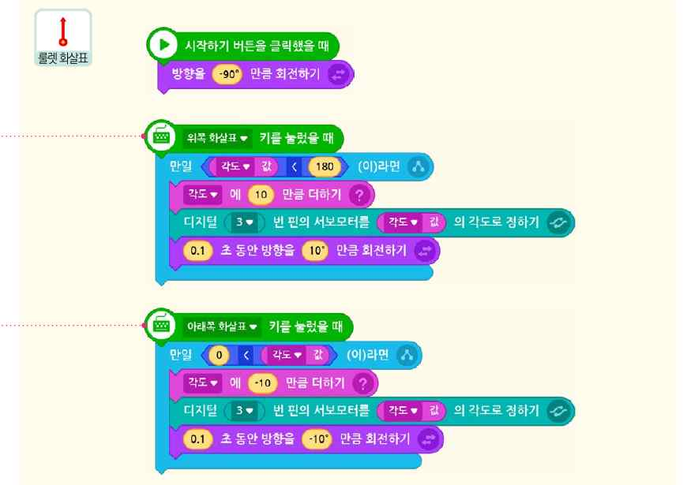
서보모터 회전 각도기존 회전 코드에 각도 전달
교사는 두 장치의 기존 코드에서 입력을 읽는 부분과 각도를 지정하는 부분을 찾아 비교하도록 돕는다.
가변저항의 입력값을 서보모터의 회전 각도로 활용하려면 어떻게 해야 할까?
거리 감지 경보기
- 초음파 센서 거리 측정입력 코드에서 측정값 읽기
- 조건 판단측정값과 기준 거리 비교
- 수동버저 제어판단 결과에 따른 출력 제어
기준 거리의 경계 검증
- 가까울 때
- 같을 때
- 멀 때
세 거리에서 예상과 실제를 비교하고, 기준 거리와 같을 때의 동작을 설명한다.
빙글빙글 허수아비
다이얼 방향 표지판과 거리 감지 경보기를 하나의 시스템으로 연결
- 입력
가변저항 · 초음파 센서
기준 설정값과 거리 측정값 읽기
- 처리
감지 거리 기준 설정 및 비교
가변저항으로 기준을 조절하고 거리 측정값과 비교
- 출력
서보모터 · 수동버저
회전 동작과 경보음 출력
앞서 학습한 코드와 기능을 재사용·조합·변형한다.
작동하는 코드에서 더 나은 코드로
분석
- 1예상과 실제 비교
- 2오류 원인 분석·수정
개선
- 4효율화 또는 기능 확장
- 5동일 조건 재검증
빙글빙글 허수아비의 거리 기준과 출력 동작을 바탕으로, 조건을 유지한 채 수정 전후를 비교한다.
새로운 생활 속 문제에 도전하기
학생 주도 후속 모둠 프로젝트
- 생활 속 문제 발견
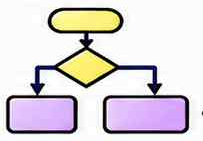
장치와 알고리즘 선택- 시스템 설계·구현
- 검증·개선·공유
문제에 맞게 장치를 선택한다. 장치의 종류와 개수는 모둠이 결정한다.
11차시 이후 별도 시수로 운영한다.
문제 해결 과정이 평가로 이어지는 수업
- 형성평가이해 수준과 문제 해결 과정 확인 및 피드백
- 중간 과제지식 활용 및 코드 연결·조합·변형 평가
- 후속 모둠 프로젝트문제 정의·설계·구현·검증·개선의 종합 평가
중간 과제의 수행평가 실시 여부는 성취기준과 학교 평가계획에 따라 선택한다.
교사 주도 AI·디지털 활용
교사 · 수업자료 개발
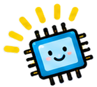
장치 원리 시각화- 탐구 질문과 단계별 자료 제작
- 학생 산출물의 신속한 시각화·반영
- 자료 검토 및 보완
학생 · 학습 지원
- 이전 개념과 코드 복습
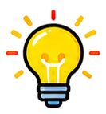
해결 방법 탐색- 실행 결과 확인 및 개선
AI·디지털 도구는 학생의 사고를 대신하는 것이 아니라 문제 해결을 지원하는 수단이다.
개별 장치의 탐구에서 창의적 문제 해결까지
- 교과서 기본 실습도움닫기
- 응용 과제지식 확장
- 연결·조합 과제문제 해결 범위 확장
- 복합 시스템 구현·개선
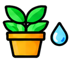
새로운 생활 문제 해결지식의 전이
배운 지식과 기능을 연결·조합·변형하는 과정에서 컴퓨팅 사고력을 기른다.
2부. 수업 설계 실습
- 5분모둠 활동 안내
- 10분교과서 분석
- 25분중간 과제 설계
- 15분결과 공유
- 5분마무리
교과서에서 수업의 연결점 찾기
모둠별 교과서 분석
- 개별 장치 기본 실습 살펴보기
- 복합 프로젝트에 필요한 지식과 기능 분석
- 기본 실습과 프로젝트 사이에 필요한 학습 경험 찾기
학생들이 복합 프로젝트를 스스로 해결하려면 어떤 경험이 필요할까?
중간 과제 설계하기
- 과제명 및 문제 상황
- 활용할 기존 지식과 기능
- 학생이 탐구할 내용
- 연결·조합·변형할 코드
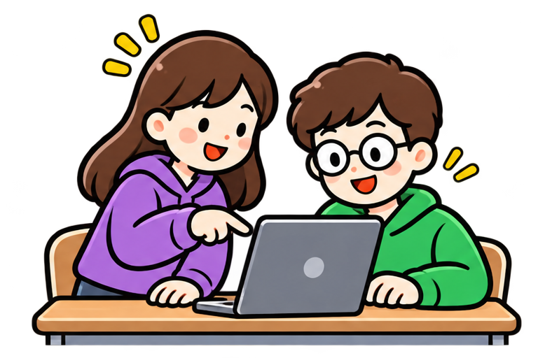
교사의 핵심 발문 및 지원 방법- 평가 및 피드백 요소
새로운 기능을 많이 가르치는 과제보다 배운 지식을 활용할 수 있는 과제를 설계한다.
수업 아이디어 공유하기
모둠별 발표 및 피드백
- 어떤 중간 과제를 설계했는가?
- 기존 학습과 어떻게 연결되는가?
- 학생의 문제 해결 경험을 어떻게 확장하는가?
다른 모둠의 아이디어를 자신의 수업에 적용할 가능성도 함께 탐색한다.
개별 장치의 탐구에서 창의적 문제 해결까지
배운 지식을 연결하고,
문제 해결의 범위를 넓히고,
새로운 문제에 스스로 도전하는 수업